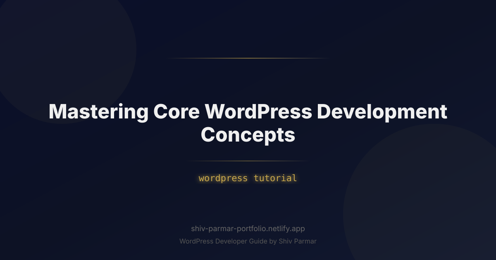

Mastering Core WordPress Development Concepts
Table of Contents
WordPress powers over 40% of all websites on the internet, evolving from a simple blogging platform into a robust, enterprise-grade Content Management System (CMS). However, there is a vast difference between simply building a website using pre-made themes and plugins versus truly mastering core software development within the platform. For developers aiming to build high-performance, secure, and scalable web applications, understanding the underlying engine of the platform is essential.
Whether you are transitioning from front-end web design into backend development or searching for an authoritative wordpress tutorial to elevate your coding practices, getting to grips with execution order, database interactions, template mechanics, and API integration is critical. The web development landscape demands clean, efficient, and modular code that adheres to strict standards.
This comprehensive WordPress guide serves as a deep dive into fundamental technical concepts every developer must master. We will explore how the application processes requests, how to extend functionality safely through custom code, and how to harness modern architectural patterns to build world-class digital experiences.
What is Core WordPress Development?
At its foundation, core platform development refers to writing custom PHP, JavaScript, HTML, and CSS to interact directly with the software's architecture, rather than relying on point-and-click page builders. It involves writing custom plugins, engineering custom themes, interacting with the REST API, and creating tailored administrative workflows.
Under the hood, the system relies on a stack built primarily on PHP and MySQL or MariaDB. When a user requests a URL, the application boots up, parses the URL, establishes a database connection, runs a set of core files, queries the database for content, determines which template file should render that content, and streams HTML back to the user's browser. Understanding this complete lifecycle is what separates beginners from senior engineering professionals.
Core development encompasses several structural layers:
- The Hook System: The event-driven architecture that allows developers to inject custom logic at specific execution points without modifying core files.
- The Database Schema: A standardized relational structure consisting of core tables (such as
wp_posts,wp_postmeta,wp_options, andwp_users) optimized for flexible content storage. - The Template Hierarchy: The fallback logic used by the software to select specific template files based on the requested page type.
- The REST API & Gutenberg Block Architecture: Modern interfaces combining React-based client rendering with PHP backend endpoints.
Why Custom WordPress Development Matters in 2026
As web engines become faster and user expectations rise, relying heavily on third-party site builders and bloated plugins often leads to severe web performance penalties, slow page load times, and security vulnerabilities. Modern site optimization guidelines place heavy emphasis on Core Web Vitals, requiring lightweight, highly optimized web builds.
Mastering native code allows engineers to create hyper-lean applications tailored precisely to business logic. Furthermore, the modern era has introduced the Full Site Editing (FSE) framework, the Interactivity API, and headless architecture capabilities. Developers who understand how to combine custom PHP backends with modern JavaScript frontends hold a significant competitive advantage in the software engineering landscape.
By shifting from plugin assembly to custom development, you gain total control over performance, code maintainability, security standards, and seamless third-party API integrations—delivering websites that scale efficiently under high server loads.
Core WordPress Development Concepts: A Step-by-Step Guide
1. Demystifying the Template Hierarchy
The template hierarchy is the rendering pipeline. When a user requests a page (for example, an archive page or a single post), the application processes the request query and iterates through a predefined list of template filenames. It selects the first matching template file found in the active theme directory.
For instance, if a user accesses a single post of a custom post type named portfolio, the template solver looks for files in the following exact order:
single-portfolio-{slug}.phpsingle-portfolio.phpsingle.phpsingular.phpindex.php(the final fallback file)
Understanding this ladder prevents code duplication and allows developers to construct modular theme structures using smaller, reusable template parts via functions like get_template_part().
2. Mastering The Loop and Custom Queries
The Loop is the foundational engine used to process and output content for every page request. It fetches records returned by the main query and iterates through them using standard PHP control loops.
Here is the standard implementation of The Loop:
<?php
if ( have_posts() ) :
while ( have_posts() ) : the_post();
?>
<article id="post-<?php the_ID(); ?>" <?php post_class(); ?>>
<h2><a href="<?php the_permalink(); ?>"><?php the_title(); ?></a></h2>
<div class="entry-content">
<?php the_content(); ?>
</div>
</article>
<?php
endwhile;
else :
echo '<p>No content found.</p>';
endif;
?>When fetching secondary content—such as displaying the latest 3 custom post type items inside a sidebar—you should instantiate a new WP_Query object instead of altering the main global query. Crucially, always call wp_reset_postdata() immediately following a custom loop to restore global post data context back to the main request query.
<?php
$args = array(
'post_type' => 'portfolio',
'posts_per_page' => 3,
'post_status' => 'publish',
'orderby' => 'date',
'order' => 'DESC',
);
$portfolio_query = new WP_Query( $args );
if ( $portfolio_query->have_posts() ) :
while ( $portfolio_query->have_posts() ) : $portfolio_query->the_post();
?>
<div class="portfolio-item">
<h3><?php the_title(); ?></h3>
<?php the_excerpt(); ?>
</div>
<?php
endwhile;
wp_reset_postdata(); // Essential for resetting global data context
else :
// No posts found
endif;
?>3. The Event-Driven Architecture: Actions and Filters
The core execution lifecycle relies heavily on hooks: Actions and Filters. Hooks allow your custom code to attach to system events without modifying core core files—a imperative rule of modern software development.
Actions allow you to execute custom code at specific lifecycle moments (e.g., when a post is published, when assets are enqueued, or when the database initializes).
Filters allow you to intercept, modify, and return data before it is rendered to the screen or saved to the database.
<?php
// Example of an Action Hook: Safely enqueuing front-end assets
function my_custom_theme_scripts() {
wp_enqueue_style(
'main-styles',
get_template_directory_uri() . '/css/main.css',
array(),
'1.0.0'
);
wp_enqueue_script(
'main-app',
get_template_directory_uri() . '/js/app.js',
array('jquery'),
'1.0.0',
true
);
}
add_action( 'wp_enqueue_scripts', 'my_custom_theme_scripts' );
// Example of a Filter Hook: Modifying the excerpt length globally
function custom_excerpt_length( $length ) {
return 20; // Limits excerpt to 20 words
}
add_filter( 'excerpt_length', 'custom_excerpt_length', 999 );
?>4. Extending Data Structures: Custom Post Types & Taxonomies
While default installation provides "Posts" and "Pages", professional development requires custom content models. Custom Post Types (CPTs) allow developers to turn the backend into a specialized application system, such as managing Real Estate Listings, Case Studies, or Products.
The code below demonstrates how to cleanly register a Custom Post Type alongside custom hierarchical taxonomies using standard hooks.
<?php
function register_project_custom_post_type() {
$labels = array(
'name' => 'Projects',
'singular_name' => 'Project',
'add_new_item' => 'Add New Project',
'edit_item' => 'Edit Project',
'all_items' => 'All Projects',
);
$args = array(
'labels' => $labels,
'public' => true,
'has_archive' => true,
'rewrite' => array( 'slug' => 'projects' ),
'supports' => array( 'title', 'editor', 'thumbnail', 'excerpt' ),
'show_in_rest' => true, // Enables Gutenberg block editor and REST API endpoint
'menu_icon' => 'dashicons-portfolio',
);
register_post_type( 'project', $args );
}
add_action( 'init', 'register_project_custom_post_type' );
?>5. Application Security: Sanitization, Escaping, and Nonces
Security must be integrated into every step of development. A foundational security rule is: Sanitize on Input, Escape on Output.
- Sanitization: Cleaning user input before saving it to the database to prevent cross-site scripting (XSS) or database injection attacks.
- Escaping: Stripping unwanted HTML structures and malicious script executions right before rendering data to the web browser.
- Nonces: Number used once. cryptographic tokens used to verify that request calls originate from authenticated users intended actions, neutralizing Cross-Site Request Forgery (CSRF) vulnerabilities.
<?php
// 1. Validating and Sanitizing Input Data
if ( isset( $_POST['user_bio'] ) && isset( $_POST['bio_nonce_field'] ) ) {
// Verify CSRF Nonce
if ( wp_verify_nonce( $_POST['bio_nonce_field'], 'save_bio_action' ) ) {
// Sanitize string before saving
$clean_bio = sanitize_textarea_field( $_POST['user_bio'] );
update_user_meta( get_current_user_id(), 'user_bio', $clean_bio );
}
}
// 2. Safely Escaping Data Output
$user_website = get_user_meta( get_current_user_id(), 'user_website', true );
$user_name = get_user_meta( get_current_user_id(), 'user_name', true );
?>
<!-- Escaping URLs and HTML context attributes safely -->
<a href="<?php echo esc_url( $user_website ); ?>" title="<?php echo esc_attr( $user_name ); ?>">
<?php echo esc_html( $user_name ); ?>
</a>6. Modern Gutenberg Block Development
Modern application interfaces rely on custom React blocks built inside the block editor engine. Utilizing the official @wordpress/scripts build system, developers write modern JavaScript (ES6+ and JSX) that compiles into optimized front-end assets.
Every custom block requires a metadata configuration file named block.json:
{
"$schema": "https://schemas.wp.org/trunk/block.json",
"apiVersion": 3,
"name": "custom-plugin/notice-box",
"title": "Notice Box",
"category": "design",
"icon": "info",
"description": "A custom callout notice box block.",
"supports": {
"html": false
},
"textdomain": "custom-plugin",
"editorScript": "file:./build/index.js",
"style": "file:./build/index.css"
}The companion JavaScript source file registers the editor layout interface via React:
import { registerBlockType } from '@wordpress/blocks';
import { RichText, useBlockProps } from '@wordpress/block-editor';
registerBlockType( 'custom-plugin/notice-box', {
edit( { attributes, setAttributes } ) {
const blockProps = useBlockProps();
return (
<div { ...blockProps }>
<RichText
tagName="p"
value={ attributes.content }
onChange={ ( content ) => setAttributes( { content } ) }
placeholder="Enter notice text here..."
/>
</div>
);
},
save( { attributes } ) {
const blockProps = useBlockProps.save();
return (
<div { ...blockProps }>
<RichText.Content tagName="p" value={ attributes.content } />
</div>
);
},
} );7. Interacting with the REST API & Custom Endpoints
The application features a fully integrated REST API interface, enabling decoupled (headless) application architecture or simple asynchronous (AJAX) data exchanges. Developers can effortlessly create custom endpoints using register_rest_route().
<?php
function my_custom_rest_routes() {
register_rest_route( 'custom/v1', '/latest-posts/', array(
'methods' => 'GET',
'callback' => 'my_get_latest_posts_callback',
'permission_callback' => '__return_true', // Enforce security access controls here
) );
}
add_action( 'rest_api_init', 'my_custom_rest_routes' );
function my_get_latest_posts_callback( $request ) {
$posts = get_posts( array(
'posts_per_page' => 5,
'post_status' => 'publish',
) );
if ( empty( $posts ) ) {
return new WP_Error( 'no_posts', 'No posts found', array( 'status' => 404 ) );
}
$data = array();
foreach ( $posts as $post ) {
$data[] = array(
'id' => $post->ID,
'title' => $post->post_title,
'link' => get_permalink( $post->ID ),
);
}
return rest_ensure_response( $data );
}
?>Best Practices for Professional Development
Building high-performance software requires strict adherence to architectural standards, efficiency strategies, and security protocols. Following unified conventions ensures code bases remain maintainable across engineering teams.
The following key operational standards separate clean implementations from brittle setups:
| Development Category | Legacy or Suboptimal Practice | Modern Software Engineering Standard | Primary Benefit |
|---|---|---|---|
| Asset Loading | Hardcoding script tags directly inside header.php templates. |
Enqueueing scripts via wp_enqueue_script() hooked into wp_enqueue_scripts. |
Prevents duplicate script rendering, manages dependencies automatically, and allows script deferral. |
| Data Caching | Querying expensive database operations on every single pageload. | Caching heavy database computation outputs using the Transients API. | Reduces server CPU strain, optimizes execution times, and dramatically improves response speeds. |
| Database Access | Writing raw, unescaped SQL strings like $wpdb->query("SELECT..."). |
Using prepared statements with $wpdb->prepare(). |
Protects application persistence engines entirely against SQL Injection vulnerabilities. |
| Plugin Architecture | Dumping hundreds of unorganized logic snippets into a single functions.php file. |
Writing modular, single-responsibility custom plugins organized into discrete Object-Oriented classes. | Ensures theme independence, simplifies unit testing routines, and streamlines application maintenance. |
To implement proper caching using the Transients API, wrap your resource-intensive calculations inside expiration handlers:
<?php
// Attempt to retrieve cached output from database memory
$top_authors = get_transient( 'my_app_top_authors' );
if ( false === $top_authors ) {
// If cache does not exist, run expensive database query
$top_authors = my_expensive_database_query_function();
// Cache the result in database for 12 hours (12 * HOUR_IN_SECONDS)
set_transient( 'my_app_top_authors', $top_authors, 12 * HOUR_IN_SECONDS );
}
// Render data safely
?>Common Mistakes to Avoid
Even seasoned software engineers coming from other PHP frameworks (like Laravel or Symfony) can make architectural mistakes due to specific platform conventions. Avoiding these anti-patterns will keep your projects stable, maintainable, and secure.
-
Modifying Core Software Files Directly: Never alter core files inside the
wp-includesorwp-admindirectories. Any updates will overwrite your changes instantly, destroying custom functionality and leaving backdoors open. Always use actions, filters, or custom plugin hooks. -
Failing to Reset Global Query Context: Using secondary standard loops or modifying global query objects without calling
wp_reset_postdata()causes downstream template components to read wrong page contexts. This leads to broken pagination, incorrect dynamic sidebars, and failing breadcrumb trails. -
Hardcoding Absolute File Paths: Never hardcode static local folder URLs or server drive paths directly into code assets. Always rely on built-in path utility functions such as
plugin_dir_path( __FILE__ ),get_stylesheet_directory_uri(), orget_template_directory()to ensure cross-environment deployment flexibility. -
Neglecting WP_DEBUG During Development: Developing applications without error monitoring active allows subtle array index notices, deprecated function warnings, and PHP errors to accumulate unchecked. Always set
define( 'WP_DEBUG', true );inside your local developmentwp-config.phpfile to catch syntax bugs immediately. - Over-relying on Plugins for Simple Functions: Installing massive third-party plugins to execute tiny tasks (like inserting a single analytics tracking snippet or customizing a basic post slug) adds unnecessary overhead, security exposure, and database overhead. Write targeted custom code modules whenever feasible.
Conclusion
Mastering the fundamentals of WordPress development is an ongoing journey, but building a strong foundation in core concepts—such as hooks, the template hierarchy, and custom database queries—is what sets exceptional developers apart. Whether you used this WordPress guide to refresh your technical knowledge or as a blueprint for your next custom project, taking the time to understand how the platform operates under the hood empowers you to create faster, more secure, and highly scalable web experiences.
As you put these principles into practice, remember that clean code and adherence to standards are essential for long-term project success. Be sure to bookmark this resource, explore our step-by-step wordpress tutorial series for deeper technical dives, and continuously experiment in a local development environment. With consistent hands-on experience, advanced custom theme building and plugin development will quickly become second nature.
Need a seasoned professional to bring your complex web projects to life? If you are looking for an expert to engineer custom solutions, optimize performance, or build bespoke themes and plugins, Shiv Parmar is available for high-quality WordPress development work worldwide. Reach out today to discuss your digital vision and take your project to the next level!